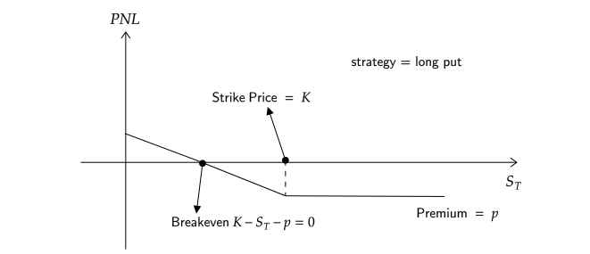

# import modules
import numpy as np
import matplotlib.pyplot as plt
from numpy import exp, log, sqrt
import pandas as pd
from scipy.stats import norm
import scipy.stats as ss
import seaborn as snsTopics in Quantitative Finance, Summer 2025
Lecture 2: Crash course on stochastic calculus
\[ \renewcommand{\d}{\text{d} } \newcommand{\bea}{\begin{align}} \newcommand{\eea}{\end{align}} \newcommand{\supp}{\mathrm{supp}} \newcommand{\F}{\mathcal{F} } \newcommand{\cF}{\mathcal{F} } \newcommand{\E}{\mathbb{E} } \newcommand{\Eof}[1]{\mathbb{E}\left[ #1 \right]} \def\Cov{{ \text{Cov} }} \def\Var{{ \text{Var} }} \newcommand{\1}{\mathbb{1} } \newcommand{\p}{\partial} \renewcommand{\P}{\mathbb{P} } \newcommand{\PP}{\mathbb{P} } \newcommand{\Pof}[1]{\mathbb{P}\left[ #1 \right]} \newcommand{\QQ}{\mathbb{Q} } \renewcommand{\R}{\mathbb{R} } \newcommand{\DD}{\mathbb{D} } \newcommand{\HH}{\mathbb{H} } \newcommand{\spn}{\mathrm{span} } \newcommand{\cov}{\mathrm{cov} } \newcommand{\HS}{\mathcal{L}_{\mathrm{HS}} } \newcommand{\Hess}{\mathrm{Hess} } \newcommand{\trace}{\mathrm{trace} } \newcommand{\LL}{\mathcal{L} } \newcommand{\s}{\mathcal{S} } \newcommand{\ee}{\mathcal{E} } \newcommand{\ff}{\mathcal{F} } \newcommand{\hh}{\mathcal{H} } \newcommand{\bb}{\mathcal{B} } \newcommand{\dd}{\mathcal{D} } \newcommand{\g}{\mathcal{G} } \newcommand{\half}{\frac{1}{2} } \newcommand{\T}{\mathcal{T} } \newcommand{\bit}{\begin{itemize}} \newcommand{\eit}{\end{itemize}} \newcommand{\beq}{\begin{equation}} \newcommand{\eeq}{\end{equation}} \newcommand{\tr}{\text{tr}} \]
Outline of Lecture 2
- Brownian motion
- Stochastic integral
- Ito’s formula
- Feynman-Kac formula
- Characteristic function for Lévy area
Definition of Brownian motion
Let \((\Omega,\cF_t,\P)\) be a filtered probability space.
A stochastic process \(B_t\) adapted to \(\cF_t\) is called a (standard) Brownian motion or a Wiener process if it satisfies the following conditions
\(\P[\omega: B_0(\omega) = 0] = 1\), i.e., the process starts at zero almost surely.
For any \(0 \leq s < t\), the random variable \(B_t - B_s\) is normally distributed with mean 0 and variance \(t-s\), i.e., for any \(a<b\), \[ \P[a \leq B_t - B_s \leq b] = \frac{1}{\sqrt{2\pi(t-s)}}\int_a^b e^{-\frac{x^2}{2(t-s)}} {\rm d} x. \]
\(B_t\) has independent increment, i.e., for any \(0\leq t_1 < t_2 < \cdots < t_n\), the random variables \[ B_{t_1}, \; B_{t_2} - B_{t_1},\; \cdots, \; B_{t_n} - B_{t_{n-1}} \] are independent.
Almost all sample paths of \(B_t\) are continuous functions, i.e., \[ \P[\omega:B_t(\omega) \text{ is continuous } ] = 1 \]
Remark
- A Brownian motion is sometimes defined as a stochastic process satisfying only the first 3 conditions in the definition. Such a process always has continuous modification by applying Kolmogorov’s continuity criterion.
- The standard Brownian motion starts at 0. A Brownian motion starts at \(x\neq 0\) is obtain by shifting \(x + B_t\).
- \(X_t = x + \sigma B_t\), \(X_t\) has mean \(x\) and variance \(\sigma^2 t\), whereas \(X_t - X_s\) has mean \(0\) variance \(\sigma^2(t-s)\).
Kolmogorov’s continuity criterion
Theorem
A process \(X\), for which there exist three constants \(\alpha\), \(\beta\), \(C > 0\) such that \[ \Eof{|X_{t+h} - X_t|^{\alpha}} \leq C h^{1 + \beta} \] for every \(t\) and \(h\), has a modification which is almost surely continuous.
注: Modification(修正), 设概率空间 \((\Omega, \cF, \P)\) 上有两个指标集为 \(T\) 的随机过程 \(X=\{X_t\}\) 和 \(Y=\{Y_t\}\), 那么我们称 \(Y\) 是 \(X\) 的修正, 如果对于 \(\forall t \in T\) 有: \[ \P[X_t = Y_t] = 1. \] 之所以把上面的概念称作修正, 是因为 \(Y\) 相当于是把原过程 \(X\) 调整了极少量的点之后得来的.
For Brownian motion \(B_t\), since the random variable \(B_{t+h} - B_t\) is centered Gaussian with variance \(h\), we have
\[ \Eof{(B_{t+h} - B_t)^4} = 3 h^2. \]
Therefore, by taking \(\alpha=4\), \(\beta = 1\), and \(C=3\), the Kolmogorov’s continuity criterion applies.
Historical note
Quotes from the Wikipage:
“Brownian motion or pedesis (from Greek: πήδησις /pɛ̌ːdɛːsis/”leaping”) is the random motion of particles suspended in a fluid (a liquid or a gas) resulting from their collision with the quick atoms or molecules in the gas or liquid.”
“This transport phenomenon is named after the botanist Robert Brown. In 1827, while looking through a microscope at particles found in pollen grains in water, he noted that the particles moved through the water but was not able to determine the mechanisms that caused this motion.”
“The first person to describe the mathematics behind Brownian motion was Thorvald N. Thiele in a paper on the method of least squares published in 1880. This was followed independently by Louis Bachelier in 1900 in his PhD thesis”The theory of speculation”, in which he presented a stochastic analysis of the stock and option markets. Albert Einstein (in one of his 1905 papers) and Marian Smoluchowski (1906) brought the solution of the problem to the attention of physicists, and presented it as a way to indirectly confirm the existence of atoms and molecules. Their equations describing Brownian motion were subsequently verified by the experimental work of Jean Baptiste Perrin in 1908.”
Андре́й Никола́евич Колмого́ров
Courtesy: Photo from Encyclopedia Britannica
Quotes from the Wikipage:
Andrey Nikolaevich Kolmogorov (Russian: Андре́й Никола́евич Колмого́ров), 25 April 1903 – 20 October 1987) was a Soviet mathematician who contributed to the mathematics of probability theory, topology, intuitionistic logic, turbulence, classical mechanics, algorithmic information theory and computational complexity.
Nobert Wiener
Courtesy: Photo from Encyclopedia Britannica
Quotes from the Wikipage:
Norbert Wiener, November 26, 1894 – March 18, 1964, was an American mathematician and philosopher. He was a professor of mathematics at the Massachusetts Institute of Technology. A child prodigy, Wiener later became an early researcher in stochastic and mathematical noise processes, contributing work relevant to electronic engineering, electronic communication, and control systems.
Properties of Brownian motion
The following properties hold for Brownian motion \(B_t\).
Time-homogeneity For any \(s>0\), the process \(B_{t+s} - B_s\), \(t\geq 0\) is also a Brownian motion and is independent of the \(\sigma\)-algebra \(\sigma(B_u, u\leq s)\).
Symmetry The process \(-B_t\), \(t\geq 0\), is a Brownian motion.
Self-similarity For every \(c > 0\), the process \(cB_{t/c^2}\), \(t \geq 0\), is a Brownian motion.
Time inversion The process \(X\) defined by \(X_0=0\), \(X_t = tB_{1/t}\) for \(t>0\), is a Brownian motion.
Distributional properties of Brownian motion
Brownian motion is a Gaussian process, it is fully characterized by the mean and the covariance functions.
\(\Eof{B_t} = 0\) for all \(t\)
\(\cov(B_t,B_s) = \min\{s,t\}\)
To calculate the covariance, without loss of generality, we assume \(s < t\).
\[\begin{align*} \cov(B_t,B_s) &= \Eof{B_t\, B_s} = \Eof{(B_t - B_s + B_s)B_s} = \Eof{(B_t - B_s)B_s} + s \\ &= \Eof{B_t - B_s}\,\Eof{B_s} + s \quad (\because \text{ independent increment}) \\ &= s = \min\{s,t\}. \end{align*}\]
Review: Gaussian process
A stochastic process \(X_t\) is called a Gaussian process if all its finite dimensional distributions are multivariate normally distributed. Thus, a Gaussian process is fully characterized by its mean function \(\mu(t) = \Eof{X_t}\) and (auto)covariance function \(\gamma(t,s) = \cov(X_t,X_s)\).
Commonly encountered Gaussian processes
- Brownian motion
- Brownian motion with deterministic drift
- Brownian bridge
- Ornstein-Uhlenbeck process
- fractional Brownian motion
Carl Friedrich Gauss
Courtesy: Wikipedia
Quote from the Wikipage:
Johann Carl Friedrich Gauss (/ɡaʊs/; German: Gauß [kaʁl ˈfʁiːdʁɪç ˈɡaʊs]; Latin: Carolus Fridericus Gauss; 30 April 1777 – 23 February 1855) was a German mathematician and physicist who made significant contributions to many fields in mathematics and science. Sometimes referred to as the Princeps mathematicorum (Latin for ‘“the foremost of mathematicians”’) and “the greatest mathematician since antiquity”, Gauss had an exceptional influence in many fields of mathematics and science, and is ranked among history’s most influential mathematicians.
Variation of a function
Let \(f:[0,T] \to \R\). Let \(\Pi_n = \{0=t_0 < t_1 < \cdots < t_n = T \}\) be a sequence of partitions of the finite interval \([0,T]\) and denote \(\displaystyle\|\Pi_n\| = \max_n\{ t_i - t_{i-1} \}\). The variation \(V_f(T)\) of \(f\) in \([0,T]\) is defined as \[ V_f(T) = \lim_{\|\Pi_n\|\to 0} \sum_{i=1}^n |f(t_i) - f(t_{i-1})| \] provided the limit exists.
Remark
An important property for functions of finite variation is that it can be uniquely written as the sum of an increasing function and a decreasing function.
实际上记录了在 \(y\) 轴上经历的路程.
- 递增函数: Variation = 终值 - 初值.
Quadratic variation and covariation
Let \(f,g:[0,T] \to \R\). Let \(\Pi_n = \{0=t_0 < t_1 < \cdots < t_n = T\}\) be a sequence of partitions of the finite interval \([0,T]\) and denote \(\|\Pi_n\| = \max_n\{ t_i - t_{i-1} \}\).
Quadratic variation
The quadratic variation of \(f\), denoted by \([f](T)\), in \([0,T]\) is defined as
\[ [f](T) = \lim_{\|\Pi_n\|\to 0} \sum_{i=1}^n |f(t_i) - f(t_{i-1})|^2 \]
provided the limit exists.
Quadratic covariation
The quadratic covariation of \(f\) and \(g\), denoted by \([f,g](T)\), in \([0,T]\) is defined as
\[ [f,g](T) = \lim_{\|\Pi_n\|\to 0} \sum_{i=1}^n [f(t_i) - f(t_{i-1})][g(t_i) - g(t_{i-1})] \]
provided the limit exists.
Remark
One can define even higher order variations, say, cubic variation. However, if the variation at some order is finite, all the higher order variations vanish. For example, the cubic variation of Brownian motion vanishes since it has finite quadratic variation.
Quadratic variation of Brownian motion
Let \(\Delta_n = \{a=t_0 < t_1 < \cdots < t_n = b \}\) be a partition of a finite interval \([a,b]\). Then
\[ \lim_{n\to\infty}\sum_{i=1}^n (B_{t_{i}} - B_{t_{i-1}})^2 = b-a \quad \text{ in } L^2(\Omega) \]
as \(\|\Delta_n\| = \displaystyle\max_{1\leq i \leq n}(t_i - t_{i-1})\) goes to \(0\).
注: \(L^p\) 空间实际上是 \(p\) 次可积函数组成的空间. \(L^p\) Space
In other words, the quadratic variation \([B]_t\) of Brownian motion \(B_t\) in \([0,t]\) is \([B]_t = t\).
Remark
Almost sure convergence is guaranteed if the sequence \(\{\Delta_n\}\) satisfies the condition
\[ \Delta_1 \subset \Delta_2 \subset \cdots \subset \Delta_n \subset \cdots. \]
Almost sure convergence is also guaranteed when \(\{\Delta_n\}\) satisfies \(\displaystyle\sum_{n=1}^\infty \| \Delta_n \| < \infty\).
Technical note: Convergence in \(L^p\)
A sequence of random variables \(X_n\) defined on the probability space \((\Omega,\F,\P)\) is called convergent to \(X\) in \(L^p\) if
\[ \lim_{n\to\infty} \|X_n - X\|_p = 0 \quad \text{ or equivalently } \quad \lim_{n\to\infty} \Eof{|X_n - X|^p} = 0 \]
where \(\|X\|_p = \sqrt[p]{\Eof{|X|^p}}\) is the \(L^p\)-norm of the random variable \(X\).
Remark
Recall that we have the relationship among different types of convergence
\[ \begin{array}{ccccc} \text{in } L^p & \Rightarrow & \text{in probability} & \Rightarrow & \text{in distribution or weakly} \\ & & \Uparrow & & \\ & & \text{almost surely} \end{array} \]
Local properties of Brownian paths
Let \(B_t\) be a Brownian motion.
\(B_t\) is locally Hölder continuous of order \(\alpha\) for every \(\alpha < \frac12\).
The Brownian paths are almost surely of infinite variation on any interval.
The Brownian paths are almost surely nowhere locally Hölder continuous of order \(\alpha\) for \(\alpha > \frac12\).
Lévy’s modulus of continuity. Let \(h(t) = \sqrt{2 t \log(1/t) }\). Then
\[ \P\left[ \mathop{\overline{\lim}}_{\epsilon \to 0} \left( \sup_{0\leq t_1 < t_2 \leq 1, \\ t_2 - t_1 \leq \epsilon}\frac{|B_{t_2} - B_{t_1}|}{h(\epsilon)} \right) = 1 \right] = 1 \]
Technical note: Lipschitz and Hölder continuity
Definition (Lipschitz continuous)
A function \(f\) is called Lipschitz or Lipschitz continuous on the interval \([a,b]\) if there exists a constant \(L\) such that
\[ |f(t) - f(s)| \leq L|t-s| \]
for all \(t,s \in [a,b]\).
Definition (Hölder continuous)
A function \(f\) is called Hölder continuous of order \(\alpha\) on the interval \([a,b]\) if there exists a constant \(K\) such that
\[ |f(t) - f(s)| \leq K|t-s|^\alpha \]
for all \(t,s \in [a,b]\).
The Lévy-Ciesielski construction of Brownian motion
Let \(\{\psi_i\}\) be a complete orthonormal basis for \(L^2[0,1]\) and \(\xi_i\), \(i=1,2,\cdots\), an iid sequence of standard normal random variables defined on a probability space \((\Omega,\F,\P)\). Define \(\displaystyle \phi_i(t) = \int_0^t \psi_i(s) {\rm d}s\), for \(t\in[0,1]\). Then the stochastic process \(W\) defined by
\[ W_t = \sum_{i=1}^\infty \xi_i \phi_i(t) \]
is a Brownian motion.
Paley-Wiener expansion of Brownian motion
The Paley-Wiener representation of a Brownian path in terms of a random Fourier series.
Let \(\xi_n\) be an iid sequence of standard normal variables. Then
\[ B_t=\xi_0 t+ \sqrt{2}\sum_{n=1}^\infty\xi_n\frac{\sin( n\pi t)}{n \pi} \]
and
\[ B_t = \sqrt{2} \sum_{n=1}^\infty \xi_n \frac{\sin \left(\left(n - \frac{1}{2}\right) \pi t\right)}{ \left(n - \frac{1}{2}\right) \pi} \]
represent a Brownian motion on \([0,1]\).
# set seed for reproducing the same result
np.random.seed(1414)
# the following function plots the Brownian motion path by the Paley-Wiener expansion
def plotBM(N, color='blue', n_steps=200):
"""
Plot the Brownian motion path using the Paley-Wiener expansion.
Parameters:
N (int): Number of terms in the expansion.
That is, the number of random variables used.
That is, the ksi defined in the above section.
color (str): Color of the plot.
n_steps (int): Number of steps in the time grid.
"""
xi0, xi = norm.rvs(size=1)[0], norm.rvs(size=N)
n = np.arange(1, N+1)
W = lambda t: xi0*t + (sqrt(2)*sum(xi*np.sin(n*np.pi*t)/n/np.pi))*(N>0)
t = np.linspace(0, 1, n_steps)
y = [W(x) for x in t]
plt.plot(t, y, color=color, label=f'$N$ = {N}')
plt.xlabel('$t$')
plt.ylabel('BM');
return None
# plot
plt.figure(figsize=(12, 8))
plt.subplot(2, 2, 1)
plotBM(20)
plt.legend()
plt.subplot(2, 2, 2)
plotBM(200, color='red')
plt.legend()
plt.subplot(2, 2, 3)
plotBM(20_000, color='green')
plt.legend();Donsker’s invariance principle
- Donsker’s invariance principle is also referred to as the Donsker’s theorem.
Suppose \(\{X_i\}_{i=1}^\infty\) is an iid sequence of random variables with mean \(0\) and and variance \(1\). Let \(S_n = \sum_{i=1}^n X_i\). Define the function \(\mathfrak{S}_n\) of \(t\) by
\[\begin{align*} \mathfrak{S}_n(t) &= \frac1{\sqrt n}\sum_{i=1}^n\left[S_{i-1} + n \left( t-\frac{i-1}n \right) X_i \right]\,\1_{\left(\frac{i-1}n,\frac in\right]}(t). \end{align*}\]
注: 设 \(S_n(t)\) 是某个离散随机过程(如简单随机游走)的归一化形式, 那么当步数 \(n \to \infty\) 时, 这个过程将弱收敛到布朗运动 \(B(t)\). 在数值模拟中, 我们通过高频率地取样并归一化, 让离散过程“逼近”布朗运动.
In fact, \(\mathfrak{S}_n\) is simply the linear interpolation of the scaled random walk \(\left\{\frac{S_1}{\sqrt n}, \frac{S_2}{\sqrt n}, \cdots, \frac{S_n}{\sqrt n} \right\}\).
注: 我们只要求了 \(\Eof{X_i} = 0\) 和 \(\Var[X_i] = 1\), 而没有要求它是什么分布.
注: 随机游走(Random Walk) 是指在每个时间点上随机选择一个方向(正或负)并移动一个单位长度的过程.
Then, \(\mathfrak{S}_n\Longrightarrow W\) as \(n\to\infty\), where \(W\) denotes a Brownian motion.
In other words, as \(n\to\infty\), the linearly interpolated scaled random walk \(\mathfrak{S}_n\) converges weakly to a Brownian motion.
Technical note: Weak convergence or convergence in distribution
A sequence of random variables \(X_n\) is called convergent weakly or convergent in distribution to \(X\) if it satisfies one of the following equivalent conditions.
\(\displaystyle\lim_{n\to\infty} \phi_{X_n}(u) = \phi_X(u)\) for every \(u\), where \(\phi\) is the characteristic function.
\(\displaystyle\lim_{n\to\infty} \Eof{f(X_n)} = \Eof{f(X)}\) for all bounded continuous function \(f\)
\(\displaystyle\lim_{n\to\infty} F_n(x) = F(x)\) for every \(x\) at which \(F\) is continuous. \(F_n\) and \(F\) are cdfs of \(X_n\) and \(X\) respectively.
Remark
As opposed to the definition of convergence a.s., in \(L^p\), and in probability, in defining weak convergence, the random variables \(X_n\)’s and \(X\) need not to be defined on the same probability space.
Recap: \(t\)-distribution
\(X \sim {\cal N}(0,1)\), \(Y \sim \chi^2(n)\), then \(\displaystyle Z = \frac{X}{\sqrt{Y/n}} \sim t(n)\), here, \(n\) is the degree of freedom (df).
- Expectation: \(\Eof{Z} = 0\) for \(n > 1\).
- Variance: \(\displaystyle \Var[Z] = \frac{n}{n-2}\) for \(n > 2\).
Simulate random walk
# Simulate random walk
#np.random.seed(0)
n_steps, nu = 1_000_000, 11
# Choose t distribution with df = nu
X = ss.t.rvs(size=n_steps, df=nu)/sqrt(nu/(nu-2))
# Choose n_steps iid random variables from t distribution with df = nu
BM = np.append(0, X.cumsum())
# It's a random walk, 0, S_1, S_2, ..., S_n.
t = np.linspace(0, 1, n_steps+1)
plt.figure(figsize=(10, 6))
# plot random walk
plt.subplot(1, 2, 1)
plt.plot(t, BM, 'g')
plt.xlabel('$t$', fontsize=18);
# plot scaled random walk
plt.subplot(1, 2, 2)
#plt.plot(t, BM/n_steps)
plt.plot(t, BM/np.sqrt(n_steps))
plt.xlabel('$t$', fontsize=18);Simulation of Brownian motion
# Simulate BM by using the Donsker's invariance principle
# number of samples, number of steps, terminal time
n_sim, n_steps, T = 10_000, 1_000, 1
dt = T/n_steps
# initialize the Brownians
# n_sim: 几条布朗运动路径
# n_steps+1: 每条路径的时间点个数
B = np.zeros([n_sim, n_steps+1])
# simulation step
for i in range(n_steps):
dB = norm.rvs(size=n_sim)
# dB = dB - dB.mean() # now dB has mean 0
# dB = dB/dB.std() # now dB has variance 1
dB = np.sqrt(dt)*dB
B[:,i+1] = B[:,i] + dB dB 表示布朗运动增量, \(\Delta B \sim {\cal N}(0, \Delta t)\), 所以要乘以 dt 来构造满足这个条件的增量.
上面注释的两行是为了创造一个 \(\Delta B \sim {\cal N}(0, 1)\) 的增量. 但其实在大样本下, 自然已经接近标准正态分布了.
最终, B 是一个大小为 (10000, 1001) 的矩阵, 表示 10,000 条布朗路径, 每条路径有 1001 个时间点.
# plot
t = np.arange(0, T+dt, dt)
#t = np.linspace(0, T, n_steps+1)
plt.figure(figsize=(10, 8))
# sample path
path = np.random.choice(n_sim)
plt.subplot(2, 2, 1)
plt.plot(t, B[path, :], label=f'sample path #{path}')
plt.xlabel('$t$')
plt.ylabel('$B_t$ sample path')
plt.legend()
# histograms
plt.subplot(2, 2, 2)
time = 0.2
# plot histogram of B at time t
sns.histplot(B[:,t==time], bins=50, stat='density', label=f'$t={time}$')
# plot histogram of B at time T
sns.histplot(B[:,-1], bins=50, stat='density', color='orange', label=f'$t={T}$')
x = np.linspace(B[:,-1].min(), B[:,-1].max(), 100)
plt.plot(x, norm.pdf(x), 'r--', lw=1, label='normal pdf')
plt.plot(x, norm.pdf(x, scale=sqrt(time)), 'y--', lw=1, label='normal pdf')
plt.xlabel('$B$')
plt.legend();
# sample mean
plt.subplot(2, 2, 3)
plt.plot(t, B.mean(axis=0))
plt.hlines(y=0, xmin=0, xmax=T, color='red', ls='dotted')
plt.xlabel('$t$')
# sample standard deviation
plt.subplot(2, 2, 4)
plt.plot(t, B.std(axis=0), label='sample std')
plt.plot(t, np.sqrt(t), 'r--', label='sqrt t')
plt.xlabel('$t$')
plt.legend();Brownian motion with drift
Let \((\Omega,\F_t,\P)\) be a filtered probability space and \(B_t\) a Brownian motion on \(\Omega\). A stochastic process \(X\) of the form
\[ X_t = x + B_t + \int_0^t \mu_s \text{d}s \quad \Longleftrightarrow \quad \text{d}X_t = \text{d}B_t + \mu_t \text{d}t \]
is called a Brownian motion with drift \(\mu_t\), where \(\mu\) is adapted to the filtration \(\F_t\).
\(\mu_t\) is the velocity of the drift at time \(t\) and \(x\) is the initial value of the process at time \(t=0\).
Remark
- \(X_t\) is a Gaussian process if \(\mu_t\) is deterministic. Apparently, the mean function is \(\displaystyle \Eof{X_t} = x + \int_0^t \mu_s \text{d}s\) and the covariance function \(\gamma(t,s) = \cov(X_t,X_s) = \min\{t,s\}\).
- We can always transform a Brownian motion with drift into a standard Brownian motion by change of the underlying probability measure so long as the drift \(\mu_t\) satisfies certain conditions, say, bounded.
Wiener integral
Let \(f\) be a (deterministic) step function defined by \(f = \sum_{i=1}^n a_i \1_{[t_{i-1}, t_i)}\), where \(t_0 = a\) and \(t_n = b\), \(a_i \in \R\). The Wiener integral \(I(f)\) of \(f\) is defined by
\[ I(f) = \int_a^b f(t) \text{d}B_t = \sum_{i=1}^n a_i \Delta B_{t_i}, \quad \Delta B_{t_i} = B_{t_i} - B_{t_{i-1}}. \]
Let \(f\in L^2[a,b]\) and \(f_n\) be a sequence of step functions such that \(f_n \to f\) in \(L^2[a,b]\). The Wiener integral \(I(f)\) of \(f\) is defined by
\[ I(f) = \int_a^b f(t) {\rm d}B_t = \lim_{n\to\infty} \int_a^b f_n(t) {\rm d}B_t, \quad \text{ in } L^2(\Omega). \]
A technical issue here: Is \(I(f)\) well-defined?
注: \(I(f)\) 是一个随机变量, 因为 \({\rm d} B_t\) 是一个正态分布的随机变量.
Wiener integral is normally distributed
Theorem
For each \(f\in L^2[a,b]\), the Wiener integral \(\displaystyle \int_a^b f(t)\text{d}B_t\) is a Gaussian random variable with mean 0 and variance \(\displaystyle \|f\|_2^2 = \int_a^b f^2(t)\text{d}t\). In short,
\[ \int_a^b f(s) \text{d} B_s \sim N(0,\|f\|_2^2). \]
In particular, recall that if the integrand \(f\) is the step function \(f(t) = \sum_{i=1}^n a_i \1_{[t_{i-1},t_i)}(t)\), apparently the Wiener integral \(I(f)\) of \(f\) is normally distributed
\[ I(f) = \sum_{i=1}^n a_i \Delta B_i \sim N\left(0,\sum_{i=1}^n a_i^2 \Delta t_i \right) \]
since the \(\Delta B_i\)’s are independent normal random variables.
The proof for general \(f\in L^2[a,b]\) is based on limiting process.
Example
\[ \int_0^t s \text{d}B_s \sim N\left(0,\frac{t^3}3\right) \]
Corollary
If \(f,g\in L^2[a,b]\), then
\[ \E[I(f)I(g)] = \E\left[ \int_a^b f(s) \text{d}B_s \int_a^b g(s) \text{d}B_s\right] = \int_a^b f(t)g(t) \text{d}t. \]
Proof: 我们可以发现 \(\Eof{{\rm d}B_s {\rm d}B_t} = 0 (s\neq t)\), \(\Eof{({\rm d}B_t)^2} = \Var[{\rm d}B_t] = {\rm d} t\). (这是根据布朗运动的定义, 以及布朗运动的独立增量性质.)
Thus, the Wiener integral \(I:L^2[a,b] \to L^2(\Omega)\) is an isometry(等距). In particular, if \(f\) and \(g\) are orthogonal, i.e., \(\displaystyle \int_a^b f g \text{d}x = 0\), then the Gaussian random variables \(I(f)\) and \(I(g)\) are independent.
Properties of Wiener integral
Let \(f\) and \(g\) be deterministic \(L^2[a,b]\) functions, \(\alpha\) and \(\beta\) are constants. Then
\(\displaystyle \int_a^b \left[\alpha f(t) + \beta g(t)\right] {\rm d}B_t = \alpha \int_a^b f(t) {\rm d}B_t + \beta \int_a^b g(t) {\rm d}B_t\).
\(\displaystyle \int_a^b f(t) {\rm d}B_t = \int_a^c f(t) {\rm d}B_t+ \int_c^b f(t) {\rm d}B_t\), for \(c\in[a,b]\).
Integration by parts formula
Let \(f\) be a continuous function of bounded variation. Then almost surely
\[ \int_a^b f(t) \d B_t = f(t) B_t |_a^b - \int_a^b B_t \d f(t). \]
- Note that the integral on the left hand side is in the sense of Wiener, whereas on the right hand side is in the sense of Riemann-Stietjes.
Example
Determine the distribution of the random variable \(\displaystyle \int_0^1 B_t \d t\).
解答: \[\begin{align*} \int_0^1 B_t \d t &= t B_t \Big|_0^1 - \int_0^1 t \d B_t = B_1 - \int_0^1 t \d B_t. \end{align*}\] 那么再根据 Wiener Integral 是正态分布的, 且 Variance 为 \(\| f \|^2\), 我们知道:
- \(\displaystyle \int_0^1 t \d B_t \sim N(0, \frac{1}{3})\)
- \(\displaystyle B_1 \sim N(0,1)\)
因此 \(\displaystyle \int_0^1 B_t \d t \sim N\left(0, 1 + \frac{1}{3}\right) = N\left(0, \frac{4}{3}\right)\). (布朗运动增量独立.)
Wiener integral defines a continuous martingale
Let \(f\in L^2[a,b]\). Then the stochastic process \(M_t\) obtained through Wiener integral
\[ M_t = \int_a^t f(s) \d B_s, \quad a \leq t \leq b, \]
is a martingale with respect to \(\F_s = \sigma(B_s; s \leq t)\).
注: 过滤 (filtration)是一组随时间“增长”的 \(\sigma\)-代数, 用来描述我们在每个时间点所知道的信息. 也就是一族集合 \(\{\cF_t\}_{t \geq 0}\), 其中: \[ \cF_s \subseteq \cF_t, \quad \text{ when } s\leq t. \] 时间越往后, 信息越多.
Don’t be confused with a continuous time martingale and a continuous martinagle.
Since Wiener integral defines a Gaussian process, continuity of the process can be obtained by applying Kolmogorov’s continuity criterion.
Technical note: martingale conditions
To show if the process \(M_t\) is a martingale, we need to verify the three defining conditions
- \(M_t\) is adapted
- \(M_t\) is integrable for every \(t\)
- For every \(s < t\), \(\Eof{M_t | \F_s} = M_s\) almost surely
注: Martingale 说明了当前的期望值就是将来的条件期望, 没有“预测性”或“趋势”.
An illustrative example for Ito integral
Let’s start with defining the simple integral as
\[ \int_0^t B_s \d B_s. \]
As in the theory of Riemann-Stieltjes integral, we shall start with partitioning the interval \([0,t]\) into, say, \(n\) subintervals. Within each subinterval, we pick a point and evaluate the integrand at that point, multiply that value by the increment of the integrator in that subinterval. Then we sum up the results from each subinterval and take limit as the mesh of the partition approaches zero. Possible choices for selecting points from each subinterval may be, denoting \(\Delta B_{t_k} = B_{t_k} - B_{t_{k-1}}\):
- The right point rule: \[ R_n = \sum_{k=1}^n B_{t_k} \Delta B_{t_k} \]
- The left point rule: \[ L_n = \sum_{k=1}^n B_{t_{k-1}} \Delta B_{t_k} \]
- The midpoint rule: \[ M_n = \sum_{k=1}^n B_{t_*} \Delta B_{t_k}, \quad \text{ where } t_* = \frac{t_k + t_{k-1}}2 \]
Which rule rules?
Question: Which rule yields convergent integral? in what sense? We knew that it can’t be pathwise because the integrator, in this case the Brownian motion, is not of finite variation (because it has nonzero second variation) almost surely.
Note that the following identities hold. \[\begin{align*} && R_n - L_n = \sum_{k=1}^n \left( \Delta B_{t_k} \right)^2, \qquad R_n + L_n = \sum_{k=1}^n \Delta B_{t_k}^2 = B_t^2. \\ \end{align*}\] Hence, \[\begin{align*} && R_n = \frac{B_t^2}2 + \frac12 \sum_{k=1}^n \left( \Delta B_{t_k} \right)^2, \qquad L_n = \frac{B_t^2}2 - \frac12 \sum_{k=1}^n \left( \Delta B_{t_k} \right)^2. \end{align*}\] Notice that the first term in both expressions is independent of partitions and the second term, as we have seen in previous lecture, will converge to the quadratic variation of Brownian motion in \(L^2\) as the mesh approaches zero! Consequently,
\[\begin{align*} & \lim_{\|\Pi_n\|\to0} R_n = \frac{B_t^2}2 + \frac t2, \qquad \lim_{\|\Pi_n\|\to0} L_n = \frac{B_t^2}2 - \frac t2. \end{align*}\]
So we learnt from this simple example that
- The right point rule and the left end point rule yield different “integrals”.
- The difference between the “right integral” and the “left integral” is exactly the quadratic variation.
- The convergence is in \(L^2\) sense.
Remark
- We need to stick with one specific rule in order to have convergence.
- Ito picked the left end point rule because of adaptivity and martingality.
- \(L_n\) is a martingale whereas \(R_n\) isn’t.
- The midpoint rule leads to the Stratonovich integral.
Simulation of stochastic integral: left endpoint rule
# Simulate the stochastic integral int f(B) dB from 0 to t, for t in [0,1]
# Demonstrate the effect of Ito correction/term
# number of samples, number of steps, terminal time
n_sim, n_steps, T = 10_000, 100, 1
dt = T/n_steps
B = np.zeros([n_sim, n_steps+1])
dB = np.zeros([n_sim, n_steps+1])
# Simulate Browian paths
for i in range(n_steps):
db = norm.rvs(size=n_sim)
db = db - db.mean() # now db has mean 0
db = db/db.std() # now db has variance 1
dB[:,i] = np.sqrt(dt)*db
B[:,i+1] = B[:,i] + dB[:,i]
# Calculate the (discretized) stochastic integral using left endpoints
f = lambda x: x
dX = f(B)*dB
X = dX.cumsum(axis=1)
# plots
t = np.arange(0, T+dt, dt)
plt.figure(figsize=(12, 8))
# evolution of mean
plt.subplot(2, 2, 1)
plt.plot(t, X.mean(axis=0))
plt.xlabel('$t$')
plt.ylabel('sample mean', fontsize=12)
# evolution of variance
plt.subplot(2, 2, 2)
plt.plot(t,X.var(axis=0))
plt.xlabel('$t$')
plt.ylabel('sample variance', fontsize=12)
# histogram at terminal time
plt.subplot(2, 2, 3)
sns.histplot(X[:,-1], bins=50, stat='density', color='green', element='step');Simulation of stochastic integral: right endpoint rule
# What happens if we use right endpoints?
# Calculate the (discretized) stochastic integral using right endpoints
B = B[:,1:]
dB = dB[:,:-1]
dX = f(B)*dB
X = dX.cumsum(axis=1)
# plots
t = np.arange(0, T, dt)
plt.figure(figsize=(12, 8))
# evolution of mean
plt.subplot(2, 2, 1)
plt.plot(t,X.mean(axis=0))
plt.xlabel('$t$')
plt.ylabel('sample mean', fontsize=12)
# evolution of variance
plt.subplot(2, 2, 2)
plt.plot(t,X.var(axis=0))
plt.xlabel('$t$')
plt.ylabel('sample variance', fontsize=12)
# histogram at terminal time
plt.subplot(2, 2, 3)
sns.histplot(X[:,-1], bins=50, stat='density', color='green');伊藤 清 先生 (Itô, Kiyoshi sensei)

Courtesy: Photo from Wikipedia
Ito integral of simple processes
Definition (simple process)
A process \(\varphi_t\) is called simple if it is of the form
\[ \varphi_t(\omega) = \sum_{k=1}^n \xi_{k-1}(\omega) \1_{[t_{k-1},t_k)}(t), \]
where \(\xi_k \in \F_{t_k}\) for \(k=0,\cdots,n\).
Basically, a simple process is simply a step function with random coefficients that are measurable with respect to the left endpoints.
Simple process is defined as such for mimicking a) the step functions in the Wiener integral and b) the left endpoint rule in the Riemann integral.
The left endpoint measurability is key to the martingality of Ito integral, as we expected.
注: 和 Wiener Integral 相比, 它把被积函数 \(\varphi_t\) 也随机化了.
Definition (Ito integral of a simple process)
The stochastic integral of a simple process \(\varphi_t\) with respect to Brownian motion \(B_t\) over \([0,T]\) is defined by
\[ \int_0^T \varphi_t \d B_t = \sum_{k=1}^n \xi_{k-1} \Delta B_{t_k}, \quad \text{ where } \Delta B_{t_k} = B_{t_k} - B_{t_{k-1}}. \]
Integrand for Ito integral
Definition
We will use \(L^2_{ad}(\Omega\times[a,b])\) to denote the space of all stochastic processes \(\varphi_t(\omega)\), \(a\leq t \leq b\), satisfying
\(\varphi_t\) is adapted to the filtration \(\F_t\).
\(\displaystyle \int_a^b \Eof{|\varphi_t|^2} \d t < \infty\).
In other words, \(\varphi_t\) is adatped and in \(L^2(\Omega\times[a,b])\).
Note that, for notational simplicity, we usually omit the reference to the sample space \(\Omega\) and deonte the space as \(L^2_{ad}[a,b]\).
Lemma
Any \(L_{ad}^2\) process is the \(L^2\) limit of a sequence of simple processes. Precisely, let \(\varphi_t \in L^2_{\rm ad}([a,b])\). Then there exists a sequence of simple processes \(\{\varphi^{(n)}_t\}\) in \(L^2_{\rm ad}([a,b])\) such that
\[ \lim_{n\to\infty} \Eof{\int_a^b |\varphi^{(n)}_t - \varphi_t|^2 \d t} = 0. \]
In other words, \(\varphi^{(n)}_t \to \varphi_t\) in \(L^2_{\rm ad}([a,b])\).
Properties of Ito integral
Let \(\varphi \in L^2_{ad}\) and, for \(t \in [0,T]\),
\[ X_t = \int_0^t \varphi_s \d B_s \]
be the stochastic integral of \(\varphi_t\) with respect to Brownian motion \(B_t\) up to time \(t\). Then \(X_t\) has the following properties.
Adaptivity: \(X_t \in \F_t\) for each \(t\).
Martingality: \(X_t\) is a martingale.
Ito isometry: \[ \E[X_t^2] = \Eof{\int_0^t \varphi_s^2 \d s}\; \leftrightsquigarrow \; \Eof{\left[\int_0^t \varphi_s \d B_s\right]^2} = \int_0^t \Eof{\varphi_s^2} \d s. \]
Quadratic variation: \(\displaystyle [X]_t = \int_0^t \varphi_s^2 {\rm d} s \leftrightsquigarrow d[X]_t = \varphi_t^2 \d t\).
Continuity: \(X_t\) is continuous in \(t\) a.s.
Linearity: Let \(\psi_t\) be another adapted process with \(\displaystyle \Eof{\int_0^T \psi_t^2 \d t} < \infty\) and \(\alpha,\beta \in \R\). Then
\[ \int_0^t (\alpha \varphi_s + \beta \psi_s) \d B_s = \alpha \int_0^t \varphi_s \d B_s + \beta \int_0^t \psi_s \d B_s. \]
Ito processes
Definition
An adapted process \(X_t\) is called an Ito process if it is of the form
\[ X_t = x + \int_0^t \sigma_s \d B_s + \int_0^t b_s \d s, \]
where \(\sigma_t\) and \(b_s\) are adapted processes. We also write it in differential form as
\[ \d X_t = \sigma_t \d B_t + b_t \d t, \quad \text{with initial condition } X_0 = x. \]
The coefficient \(b_t\) is referred to as the drift (term) and \(\sigma_t\) as the diffusion (term) of the Ito process \(X_t\).
注: 非正式理解 \[ X_t = \text{初始值} + \text{“随机扰动”} + \text{“确定趋势”} \]
注: \(\sigma_t\), \(b_t\) 是适应的过程 (adapted process). 这意味着它们在每一时刻 \(t\) 的值, 只能依赖于当前或过去的信息, 不能知道未来.
Lemma
The quadratic variation of the Ito process \(X_t\) is
\[ [X]_t = \int_0^t \sigma_s^2 \d s \quad \leftrightsquigarrow \quad \d [X]_t = \sigma_t^2 \d t. \]
Note that
though the quadratic variation of Brownian motion is deterministic (recall \([B]_t = t\) a.s.), in general the quadratic variation of an Ito process is stochastic;
the proof is very similar to that of Brownian and is left as an exercise.
Ito integral with respect to Ito processes
Let \(X_t\) be an Ito process with drift \(b_t\) and diffusion \(\sigma_t\), i.e., \(X_t\) is defined by
\[ X_t = x + \int_0^t \sigma_s \d B_s + \int_0^t b_s \d s \quad \leftrightsquigarrow \quad \d X_t = \sigma_t \d B_t + b_t \d t, \; X_0 = x. \]
and \(\varphi_t\) be an adapted process. We define the stochastic integral of \(\varphi_t\) with respect to \(X_t\) as
\[ \int_0^t \varphi_s \d X_s = \int_0^t \varphi_s \sigma_s \d B_s + \int_0^t \varphi_s b_s \d s \]
provided the integrals on the right hand side are defined.
Ito’s formula for Brownian motion
Theorem
Let \(f(t,x)\) be a function with continuous partial derivatives \(f_t\), \(f_x\), and \(f_{xx}\). Let \(W_t = W_0 + B_t\) be a Brownian motion starting at \(W_0\) (nonrandom). Then, for every \(T \geq 0\),
\[ f(T,W_T) - f(0,W_0) = \int_0^T f_x(t,W_t) \d W_t + \int_0^T \left[f_t(t,W_t) + \frac12 f_{xx}(t,W_t) \right] \d t. \]
Or equivalently in differential form
\[ \d f(t,W_t) = f_x(t,W_t) \d W_t + \left[ f_t(t,W_t) + \frac12 f_{xx}(t,W_t) \right] \d t. \]
Remark
The idea is that we Taylor expand \(f(t,W_t)\) to second order then formally apply the following rule:
\[ (\d B_t)^2 \rightsquigarrow \d t, \quad (\d t)^2 \rightsquigarrow 0, \quad \d B_t \d t \rightsquigarrow 0. \]
注: Itô 引理其实说明了, 从 \(f(0, W_0)\) 到 \(f(T, W_T)\) 的变化有两个来源:
- 随着布朗运动波动的部分, \(\displaystyle \int f_x \d W_t\).
- 时间推移和布朗运动“扩散”的影响, \(\displaystyle \int \left[ f_t + \frac12 f_{xx} \right] \d t\).
注: 我们可以把 Itô 引理看成一个“随机链式法则”.
Recap: 普通链式法则
\[ \d f = f_t \d t + f_x \d x. \]
推导过程:
首先, 对 \(f\) 进行泰勒展开: \[\begin{align*} f(t+\d t, x+\d x) - f(t,x) =\; &f_t \d t + f_x \d x \\ &+ \frac12 f_{xx} (\d x)^2 + \frac12 f_{tt} (\d t)^2 + f_{tx} \d t \d x + ... \end{align*}\]
下面的二次项和高阶项都可以忽略, 因为它们的量级比 \(\d t\) 和 \(\d x\) 小得多.
Itô 引理推导
同理, 我们进行泰勒展开: \[\begin{align*} f(t+\d t, W_t +\d W_t) - f(t,W_t) =\; &f_t \d t + f_x \d W_t \\ &+ \frac12 f_{xx} (\d W_t)^2 + \frac12 f_{tt} (\d t)^2 + f_{tx} \d t \d W_t + ... \end{align*}\] 现在根据 \((\d B_t)^2 \rightsquigarrow \d t\)(这是因为 Quadratic Variation of Brownian Motion is \([B]_t = t\), 那么 \([\d B_t]_t = \d t\)), 而剩下的都趋向 \(0\), 我们就得到了 Itô 引理.
Ito’s formula for Ito process
Let \(f(t,x)\) be a function with continuous partial derivatives \(f_t\), \(f_x\), and \(f_{xx}\). Then for every \(T \geq 0\), \[\begin{align*} f(T,X_T) - f(0,x) &= \int_0^T f_t(t,X_t) \d t + \int_0^T f_x(t,X_t) \d X_t + \frac12 \int_0^T f_{xx}(t,X_t) \d [X]_t \\ &= \int_0^T f_x(t,X_t) \sigma_t \d B_t + \int_0^T \left[f_t + \frac{\sigma_t^2}2 f_{xx} + b_t f_x \right] \d t. \end{align*}\] Or in differential form
\[\begin{align*} \d f(t,X_t) &= f_t(t,X_t) \d t + f_x(t,X_t) \d X_t + \frac12 f_{xx}(t,X_t) \d [X]_t \\ &= \sigma_t f_x \d B_t + \left[ f_t + \frac{\sigma_t^2}{2} f_{xx} + b_t f_x \right] \d t \end{align*}\]
Remark
Ito’s formula naturally decomposes \(f(t,X_t)\) into a drift/finite variation part plus a diffusion/martingale part; reminiscent of the Doob decomposition. Processes consist of a finite variation part and a martingale part are also referred to as semi-martingales.
Note that the second order differential operator \(\displaystyle \frac{\sigma_t^2}2 \p_x^2 + b_t \p_x\) in the drift part is the infinitesimal generator of the process \(X_t\).
推导
\(f(t, X_t)\) 的增量为:
\[\begin{align*} \mathrm{d}f(t, X_t) &= f_t(t, X_t) \, \mathrm{d}t + f_x(t, X_t) \, \mathrm{d}X_t + \frac{1}{2} f_{xx}(t, X_t) \, (\mathrm{d}X_t)^2 \end{align*}\]
注意这里我们只保留到二阶项, 是因为 \((\mathrm{d}X_t)^2\) 是一阶(因为会出现 \((\mathrm{d}B_t)^2 = \mathrm{d}t\)), 而更高阶项如 \((\mathrm{d}t)^2\)、\(\mathrm{d}t \mathrm{d}B_t\) 等都趋于 \(0\).
接着代入 \(\mathrm{d}X_t\). 由定义, Itô 过程满足:
\[ \mathrm{d}X_t = \sigma_t \mathrm{d}B_t + b_t \mathrm{d}t. \]
我们代入 \(\mathrm{d}X_t\) 得:
一阶项: \[ f_x(t,X_t)\mathrm{d}X_t = f_x(t,X_t)(\sigma_t \mathrm{d}B_t + b_t \mathrm{d}t) \]
二阶项: 我们来计算 \((\mathrm{d}X_t)^2\):
\[ (\mathrm{d}X_t)^2 = (\sigma_t \mathrm{d}B_t + b_t \mathrm{d}t)^2 = \sigma_t^2 (\mathrm{d}B_t)^2 + 2\sigma_t b_t \mathrm{d}B_t \mathrm{d}t + b_t^2 (\mathrm{d}t)^2 \]
根据 Itô 规则:
\[ (\d B_t)^2 \rightsquigarrow \d t, \quad (\d t)^2 \rightsquigarrow 0, \quad \d B_t \d t \rightsquigarrow 0. \]
所以有:
\[ (\mathrm{d}X_t)^2 = \sigma_t^2 \, \mathrm{d}t \]
最后代入 Taylor 展开式, 合并所有项:
\[\begin{align*} \mathrm{d}f(t, X_t) &= f_t(t, X_t)\, \mathrm{d}t + f_x(t, X_t)\, (\sigma_t \mathrm{d}B_t + b_t \mathrm{d}t) + \frac{1}{2} f_{xx}(t, X_t) \cdot \sigma_t^2 \mathrm{d}t \\ &= f_x \sigma_t \, \mathrm{d}B_t + \left( f_t + b_t f_x + \frac{1}{2} \sigma_t^2 f_{xx} \right) \mathrm{d}t \end{align*}\]
\[ \boxed{ \mathrm{d}f(t, X_t) = f_x(t,X_t) \sigma_t \, \mathrm{d}B_t + \left(f_t(t,X_t) + b_t f_x(t,X_t) + \frac{1}{2} \sigma_t^2 f_{xx}(t,X_t) \right)\mathrm{d}t } \]
Review: Fundamental theorem of calculus and Taylor’s theorem
Fundamental theorem of calculus
Let \(f\) be a continuously differentiable function. Then \[ f(y) - f(x) = \int_x^y f'(\xi) \d\xi. \]
Taylor’s theorem
For a second differentiable function \(f\), there exists some \(\xi\) between \(y\) and \(x\) such that
\[\begin{align*} && f(y) - f(x) = f'(x) (y - x) + \frac{f''(\xi)}2 (y-x)^2. \end{align*}\]
Notice that the equation is exact, however in general it is not possible to specify what \(\xi\) is.
Taylor’s expansion up to 2nd order with 2 variables
The Taylor expansion of \(f\) (expanded about \((x,t)=(a,b)\)) is:
\[\begin{align*} f(x,t) = &f(a,b) + f_x(a,b)(x-a) + f_t(a,b)(t-b) \\ &+ \frac{f_{xx}(a,b)}2 (x-a)^2 + f_{xt}(a,b)(x-a)(t-b) + \frac{f_{tt}(a,b)}2 (t-b)^2 + \cdots \end{align*}\]
Applications of Ito’s formula I: Evaluating stochastic integral
In classical calculus, we barely evaluate an integral from the definitioin per se, i.e., partition the integrating interval, form Riemann sum, then take limit as the mesh of the partition approaches zero. Instead, we evaluate an integral by applying the Fundamental Theorem of Calculus. Though in stochastic calculus the Fundamental Theorem of Calculus does not really exist, we evaluate stochastic integrals by applying Ito’s formula.
Theorem
\[ \int_a^b f(B_t) \d B_t = F(B_t)\Big|_{t=a}^b - \frac12 \int_a^b f'(B_t) \d t, \]
where \(F\) is an anti-derivative of \(f\), i.e., \(F'=f\).
Theorem
\[ \int_a^b f(t,B_t) \d B_t = F(t,B_t)\Big|_{t=a}^b - \int_a^b \left[F_t(t,B_t) + \frac12 f_x(t,B_t)\right] \d t, \]
where \(F_x = f\), i.e., \(F\) is an anti-derivative of \(f\) with respect to \(x\).
- The idea is, we find an anti-derivative of \(f\) (with respect to \(x\)), say, \(F\); apply Ito’s formula to \(F\), then rearrange terms.
- However, the price we pay is that in general the last (Riemann) integral on the right hand side usually has no simple analytical expression.
Examples of stochastic integral evaluation
Evaluate the stochastic integral \(\displaystyle \int_0^t B_s \d B_s\).
Note that in this case \(f(x) = x\). Hence an anti-derivative of \(f\) is \(\displaystyle F(x) = \frac{x^2}2\).
Apply Ito’s formula to \(F\) we have\[\begin{align*} & \d F(B_t) = \d\left(\frac{B_t^2}2\right) = B_t \d B_t + \frac12 \d t \\ &\Longrightarrow \frac{B_T^2}2 - \frac{B_0^2}2 = \int_0^T B_t \d B_t + \frac12 \int_0^T \d t \\ &\Longrightarrow \int_0^T B_t \d B_t = \frac12(B_T^2 - T) \end{align*}\]
Evaluate the stochastic integral \(\displaystyle \int_0^t se^{B_s} \d B_s\).
Note that in this case \(f(t,x) = t e^x\). Hence an anti-derivative \(F\) of \(f\) is \(F(t,x) = t e^x\).
Apply Ito’s formula to \(F\) we have\[\begin{align*} & \d F(t,B_t) = \d\left(t e^{B_t} \right) = e^{B_t} \d t + te^{B_t} \d B_t + \frac12 te^{B_t} \d t \\ &\Longrightarrow T e^{B_T} = \int_0^T t e^{B_t} \d B_t + \int_0^T e^{B_t} \left(1 + \frac t2 \right) \d t \\ &\Longrightarrow \int_0^T t e^{B_t} \d B_t = T e^{B_T} - \int_0^T e^{B_t} \left(1 + \frac t2 \right) \d t \end{align*}\]
Applications of Ito’s formula II: Solving SDEs
A stochastic differential equation (SDE) is an differential equation with random noise of the form
\[ \d X_t = \mu(X_t,t) \d t + \sigma (X_t,t) \d B_t \]
注: ODE (Ordinary Differential Equation) 是指一微分方程的未知数是单一自变量的函数.
In cases, we can solve SDEs by applying Ito’s formula to certain function of \(X_t\). We demonstrate the technique by solving the following two very important examples.
Geometric Brownian motion/Black-Scholes model
\(\d X_t = \mu X_t \d t + \sigma X_t \d B_t\), where \(\mu\) and \(\sigma\) are constants.
注: \(\sigma X_t \d B_t\) 表示当前的 risk. \(\mu X_t \d t\) 表示收益.
To solve it, we apply Ito’s formula to \(\log X_t\).
Solution: 我们可以视作: \(f(t, X_t) = \log X_t\), 那么 \(f_t = 0\), \(\displaystyle f_x = \frac{1}{x}\), \(\displaystyle f_{xx} = - \frac{1}{x^2}\). \[\begin{align*} \d \log X_t &= \frac{\d X_t}{X_t} - \frac{1}{2 X_t^2} (\d X_t)^2 = \mu \d t + \sigma \d B_t - \frac{1}{2 X_t^2} (\d X_t)^2 \\ &= \mu \d t + \sigma \d B_t - \frac{1}{2 X_t^2} (\sigma^2 X_t^2 \d t) = \left(\mu - \frac12 \sigma^2 \right) \d t + \sigma \d B_t \\ \end{align*}\] 注: 最后一步别的高阶项都被舍弃了.
两边同时进行积分, 得到: \[\begin{align*} \log X_t - \log X_0 &= \left(\mu - \frac12 \sigma^2 \right) t + \int_0^t \sigma \d B_s \\ &= \left(\mu - \frac12 \sigma^2 \right) t + (\sigma B_t) \Big|_{s=0}^t - \frac12 \int_0^t 0 \d s \\ &= \left(\mu - \frac12 \sigma^2 \right) t + \sigma B_t. \end{align*}\]
所以: \[ X_t = X_0 \exp\left( \left(\mu - \frac12 \sigma^2 \right) t + \sigma B_t \right). \]
注: 设投资组合回报率为 \(r_p\), 基准指数回报率为 \(r_b\), 那么:
\[ \text{相对回报} = \frac{1 + r_p}{1 + r_b} \approx r_p - r_b. \]
- 绝对收益是指投资的费用后实际回报.
- 相对收益就是绝对收益与某些基准收益之间的差. 一般在我们买入基金产品的时候, 基金产品会有一个基准作为比较, 比如上证综指、沪深300指数、中证1000指数等. 我们买入基金的绝对收益减去比较基准同样时间区间的绝对收益, 就是该基金相对于基准的相对收益.
Ornstein-Uhlenbeck process/Vasicek model
\(\d X_t = \lambda(m - X_t) \d t + \sigma \d B_t\), where \(m\), \(\lambda\), and \(\sigma\) are constants.
To solve it, we apply Ito’s formula to \(e^{\lambda t} X_t\).
Solution: 我们可以视作: \(f(t, X_t) = e^{\lambda t} X_t\), 那么 \(f_t = \lambda e^{\lambda t} X_t\), \(f_x = e^{\lambda t}\), \(f_{xx} = 0\). \[\begin{align*} \d (e^{\lambda t} X_t) &= \lambda e^{\lambda t} X_t \d t + e^{\lambda t} \d X_t + 0 \\ &= \lambda e^{\lambda t} X_t \d t + e^{\lambda t} \left[ \lambda(m - X_t) \d t + \sigma \d B_t \right] \\ &= \left[ \lambda e^{\lambda t} X_t + \lambda e^{\lambda t} (m - X_t) \right] \d t + e^{\lambda t} \sigma \d B_t \\ &= \lambda m e^{\lambda t} \d t + e^{\lambda t} \sigma \d B_t. \end{align*}\]
两边同时进行积分, 得到: \[\begin{align*} e^{\lambda t} X_t - X_0 &= \lambda m \int_0^t e^{\lambda s} \d s + \int_0^t e^{\lambda s} \sigma \d B_s \\ &= \lambda m \frac{e^{\lambda t} - 1}{\lambda} + \sigma \int_0^t e^{\lambda s} \d B_s \\ &= m (e^{\lambda t} - 1) + \sigma \int_0^t e^{\lambda s} \d B_s. \end{align*}\]
所以最后为: \[ X_t = e^{-\lambda t} \left[ X_0 + m (e^{\lambda t} - 1) + \sigma \int_0^t e^{\lambda s} \d B_s \right]. \]
Remark
Geometric Brownian motion and Ornstein-Uhlenbeck process are special cases of the so called linear SDEs which has the general form
\[ \d X_t = (\mu_1 X_t + \mu_0) \d t + (\sigma_1 X_t + \sigma_0) \d B_t. \]
Such SDEs have “closed form” solutions.
Euler-Maruyama Scheme
现在我们考虑模拟 \(\d X_t = \mu(X_t) \d t + \sigma(X_t) \d B_t\).
那么模拟的方法就是:
\[ X_{t_{n+1}} = X_{t_n} + \mu(X_{t_n}) \Delta t + \sigma(X_{t_n}) \Delta B_{t_n}. \]
用代码表示就是:
def euler_maruyama(X0, mu, sigma, T, N):
dt = T / N
X = np.zeros(N + 1)
X[0] = X0
for n in range(N):
dB = np.random.normal(0, np.sqrt(dt)) # simulate dB_t
X[n + 1] = X[n] + mu(X[n]) * dt + sigma(X[n]) * dB
return X丸山儀四郎

当伊藤清在 1942 年发表一篇关于随机微分方程的论文时, 丸山立即认识到这项研究的重要性, 并立即发表了一系列关于随机微分方程和马尔可夫过程的论文. 丸山因其 1955 年关于随机微分方程数值解的微分近似的收敛性质的工作而闻名, 现在称为欧拉-丸山方法.
Simulation of the Ornstein-Uhlenbeck process
##### The code simulates the OU process dX = lambda (m - X) dt + sigma dB
# by Euler-Maruyama scheme
# Parameters of the OU process
lmbda, m, sigma = 5, 0.5, 0.2
x0, T = -2, 1
# number of paths and number of time steps
n_sim, n_steps = 10_000, 100
# initialize X
X = np.ones([n_sim, n_steps+1])*x0
# Euler-Maruyama scheme
dt = T/n_steps
for i in range(n_steps):
db = norm.rvs(size=n_sim)
db = db - db.mean()
db = db/db.std()
# NOTE: db is a standard normal random variable, so we scale it by sqrt(dt)
X[:,i+1] = X[:,i] + lmbda*(m - X[:,i])*dt + sigma*np.sqrt(dt)*db
# plot
plt.figure(figsize=(12, 8))
t = np.arange(0, T+dt, dt)
# histograms at different times
plt.subplot(2, 2, 1)
time = 0.02 # 0.5, 0.8
sns.histplot(X[:,t==time], bins=30, stat='density', label=f'$t={time}$', element='step')
sns.histplot(X[:,-1], bins=30, stat='density', label=f'$t={T}$', color='lightgreen', element='step')
plt.legend()
# time evolution of mean
plt.subplot(2, 2, 2)
plt.plot(t, X.mean(axis=0))
plt.xlabel('$t$')
plt.ylabel('sample mean')
# time evolution of variance
plt.subplot(2, 2, 3)
plt.plot(t, X.var(axis=0))
plt.xlabel('$t$')
plt.ylabel('sample variance');(np.sin(X[:, -1]**2)).mean()np.float64(0.23676791974798134)Stochastic differential equation
Let \((\Omega,\cF_t,\P)\) be a filtered probability space and \(W_t\) a Brownian motion defined on it. A stochastic differential equation (SDE) driven by the Brownian motion \(W_t\) is an equation of the form
\[ \d X_t = \mu(X_t,t) \d t + \sigma(X_t,t) \d W_t, \quad X_0 = x \]
or in integral form
\[ X_t = x_0 + \int_0^t \mu(X_s,s) \d s + \int_0^t \sigma(X_s,s) \d W_s. \]
As usual, \(\mu(x,t)\) is referred to as the drift part and \(\sigma(x,t)\) the diffusion part.
Connection to partial differential equation
Stochastic differential equation provides a way to numerically solve second order parabolic partial differential equations by Monte Carlo simulation. The key point is a stochastic representation of the solution to partial differential equations which we develop in the following.
Let \(X_t\) be the diffusion process driven by
\[ \d X_t = \mu(X_t,t) \d t + \sigma(X_t,t) \d W_t. \]
We shall suppress the dependence on \(x,t\) of \(\mu\) and \(\sigma\) for notational simplicity.
Theorem
Let \(u = u(x,t)\) be the solution to the terminal value problem
\[\begin{align*} & u_t + \frac{\sigma^2}2 u_{xx} + \mu u_x = 0, \quad t < T, \\ & u(x,T) = h(x). \end{align*}\]
Then \(u\) has the representation
\[ u(x,t) = \E_{t,x}\left[h(X_T)\right], \]
where \(\E_{t,x}[\cdot]\) denotes the conditional expectation \(\E[\cdot|X_t = x]\).
Proof
Applying Ito’s formula to \(u(X_t,t)\) yields
\[\begin{align*} u(X_T,T) - u(X_t,t) &= \int_t^T \sigma(X_s,s)u_x(X_s,s) \d W_s + \int_t^T \left[ u_t + \frac{\sigma^2}2 u_{xx} + \mu u_x \right]\d s \\ &= \int_t^T \sigma(X_s,s)u_x(X_s,s) \d W_s \end{align*}\]
since \(u\) satisfies the PDE
\[ u_t + \frac{\sigma^2}2 u_{xx} + \mu u_x = 0. \]
Thus taking conditional expectation \(\E_{t,x}[\cdot]\) on both sides and taking into account the terminal condition \(u(x,T) = h(x)\) we end up with
\[ u(x,t) = \E_{t,x}[h(X_T)]. \]
The Feynman-Kac formula
Let \(u = u(x,t)\) be the solution to the terminal value problem
\[\begin{align*} & u_t + \frac{\sigma^2}2 u_{xx} + \mu u_x = V(x,t) u, \quad t < T, \\ & u(x,T) = h(x). \end{align*}\]
Then \(u\) has the representation
\[ u(x,t) = \E_{t,x}\left[e^{-\int_t^T V(X_s,s) \d s}h(X_T)\right], \]
where \(\E_{t,x}[\cdot]\) denotes the conditional expectation \(\E[\cdot|X_t = x]\). This is the celebrated Feynman-Kac formula.
注: Feynman-Kac 公式将 PDE 的解转化为随机过程的期望. \(e^{-\int_t^T V(X_s,s) \d s}\) 是对路径的贴现效应, \(h(X_T)\) 是终端支付.
贴现效应: 本质是货币时间价值的体现, 即未来资金在当前时点的折现. 其核心逻辑是“现在的钱比未来的钱更值钱”, 因此需通过扣除利息补偿资金的时间成本.
终端支付: 指票据到期时, 持票人向付款人(或承兑人)提示票据并要求支付票面金额的行为.
Proof of Feynman-Kac formula
Applying Ito’s formula to \(u(X_t,t)e^{-\int_0^t V(X_s,s)\d s}\) yields
\[\begin{align*} & \d \left[ u(X_t,t)e^{-\int_0^t V(X_s,s)\d s} \right] \\ &= e^{-\int_0^t V(X_s,s)\d s}\left[ u_t(X_t,t) \d t - V(X_t,t) u(X_t,t) \d t + u_x(X_t,t) \d X_t + \frac12 u_{xx}(X_t,t) \d [X]_t \right] \\ &= e^{-\int_0^t V(X_s,s)\d s}\left[ \left\{ u_t(X_t,t) + \frac{\sigma^2(X_t,t)}2 u_{xx}(X_t,t) + \mu u_x(X_t,t) - V(X_t,t) u(X_t,t) \right\} \d t + \sigma(X_t,t) u_x(X_t,t) \d B_t \right] \\ &= e^{-\int_0^t V(X_s,s)\d s} \sigma(X_t,t) u_x(X_t,t) \d B_t \end{align*}\]
since \(u\) satisfies the PDE
\[ u_t + \frac{\sigma^2}2 u_{xx} + \mu u_x = V(x,t) u. \]
In integral form
\[\begin{align*} u(X_T,T)e^{-\int_0^T V(X_s,s)\d s} - u(X_t,t)e^{-\int_0^t V(X_s,s)\d s} &=& \int_t^T e^{-\int_0^\tau V(X_s,s)\d s} \sigma(X_\tau,\tau) u_x(X_\tau,\tau) \d B_\tau \end{align*}\]
therefore, by dividing on both sides the term \(e^{-\int_0^t V(X_s,s)\d s}\) we have
\[\begin{align*} u(X_T,T)e^{-\int_t^T V(X_s,s)\d s} - u(X_t,t) &=& \int_t^T e^{-\int_t^\tau V(X_s,s)\d s} \sigma(X_\tau,\tau) u_x(X_\tau,\tau) \d B_\tau. \end{align*}\]
Richard Phillips Feynman

Courtesy: Photo from Wikipedia
Marek Kac

{kind=link}
Courtesy: Photo from Wikipedia
Quoted from the Wikipage:
When Kac and Richard Feynman were both on the Cornell faculty he went to a lecture of Feynman’s and saw that the two of them were working on the same thing from different directions. The Feynman-Kac formula resulted, which proves rigorously the real case of Feynman’s path integrals. The complex case, which occurs when a particle’s spin is included, is still unproven.
Adding nonhomogeneous term
Let \(u = u(x,t)\) be the solution to the terminal value problem
\[\begin{align*} & u_t + \frac{\sigma^2}2 u_{xx} + \mu u_x = f(x,t), \quad t < T, \\ & u(x,T) = h(x). \end{align*}\]
Then \(u\) has the representation
\[ u(x,t) = \E_{t,x}\left[h(X_T) - \int_t^T f(X_\tau,\tau) \d\tau\right], \]
where \(\E_{t,x}[\cdot]\) denotes the conditional expectation \(\E[\cdot|X_t = x]\).
Backward second order parabolic PDEs
Finally, we have the stochastic representation for any backward second order parabolic linear PDE with terminal condition as follows.
Theorem
Let \(u = u(x,t)\) be the solution to the terminal value problem
\[\begin{align*} & u_t + \frac{\sigma^2}2 u_{xx} + \mu u_x = V(x,t) u + f(x,t), \quad t < T, \\ & u(x,T) = h(x). \end{align*}\]
Then \(u\) has the representation
\[ u(x,t) = \E_{t,x}\left[e^{-\int_t^T V(X_s,s)\d s}h(X_T) - \int_t^T e^{-\int_t^\tau V(X_s,s)\d s} f(X_\tau,\tau) \d\tau\right], \]
where \(\E_{t,x}[\cdot] = \E[\cdot|X_t = x]\) is the conditional expectation. Recall that \(X_t\) denotes the diffusion process driven by
\[ \d X_t = \mu(X_t,t) \d t + \sigma(X_t,t) \d W_t. \]
Lévy area
As an application of the Feynmann-Kac formula, we demonstrate how to calculate the characteristic function of the Lévy area. Let \((W_t, Z_t)\) be a two-dimensional Brownian motion. The Lévy area \(A_t\) is defined by
\[ A_t = \frac12 \int_0^t W_s \d Z_s - Z_s \d W_s \]
which represents the (stochastic) area of the region enclosed by the two-dimensional Brownian motion \((W_t, Z_t)\) and the radial cord.
We are interested in calculating the characteristic function of the Lévy area \(A_t\) at time \(T\), i.e,. the expectation
\[ \Eof{e^{i\xi A_T}} \]
where \(i = \sqrt{-1}\).
Characteristic function
The characteristic function is a way to describe a random variable \(X\). The characteristic function,
\[ \varphi_X(t) = \Eof{e^{itX}}, \]
a function of t, determines the behavior and properties of the probability distribution of \(X\). It is equivalent to a probability density function or cumulative distribution function, since knowing one of these functions allows computation of the others, but they provide different insights into the features of the random variable. In particular cases, one or another of these equivalent functions may be easier to represent in terms of simple standard functions.
Paul Lévy
Courtesy: Photo from The Oberwolfach Photo Collection.
Rama Cont in an article wrote:
“He made major contributions to the study of Gaussian variables and processes, the law of large numbers, the central limit theorem, stable laws, infinitely divisible laws and pioneered the study of processes with independent and stationary increments, now known as Lévy processes.”
Michael Loeve:
“Paul Lévy was a painter in the probabilistic world. Like the very great painting geniuses, his palette was his own and his paintings transmuted forever our vision of reality… His three main, somewhat overlapping, periods were: the limit laws period, the great period of additive processes and of martingales painted in pathtime colours, and the Brownian pathfinder period.”
# The code demonstrate the region enclosed by a 2-dim Brownian
# motion and the radial cord
# number of steps
n_steps = 10_000
#10_000
# terminal time
T = 1
dt = T/n_steps
dW = norm.rvs(size=n_steps)*np.sqrt(dt)
dZ = norm.rvs(size=n_steps)*np.sqrt(dt)
W = np.append(0, dW.cumsum())
Z = np.append(0, dZ.cumsum())
plt.figure(figsize=(10, 6))
plt.plot(W, Z, lw=1)
plt.plot([W[-1], W[0]], [Z[-1], Z[0]], 'ro-', lw=1);Distribution of Lévy area
First notice that \(A_t\) is a (continuous, Brownian) martingale with quadratic variation \([A]_t\) given by
\[ \d [A]_t = \frac14 (W_t^2 + Z_t^2) \d t \]
since \(W_t\) and \(Z_t\) are independent. Let \(R_t = W_t^2 + Z_t^2\). Hence,
\[ A_t \overset{d}{=} B_{\frac{1}{4} \int_0^t R_s \, \d s} \]
where \(B_t\) is a Brownian motion independent of \(R_t\). In other words, \(A_t\) is distributed as a Brownian motion running in the random time \(\displaystyle \frac14 \int_0^t R_s \d s\).
Bessel squared process
Note that, by applying Ito’s formula we obtain that \(R_t\) satisfies the SDE
\[\begin{align*} \d R_t &= 2W_t \d W_t + 2 Z_t \d Z_t + 2\d t \\ &= 2 \sqrt{R_t} \left( \frac{W_t}{\sqrt{R_t}} \d W_t + \frac{Z_t}{\sqrt{R_t}} \d Z_t \right) + 2 \d t \\ &= 2 \sqrt{R_t} \d M_t + 2 \d t, \end{align*}\]
where \(\displaystyle \d M_t = \frac{W_t}{\sqrt{R_t}} \d W_t + \frac{Z_t}{\sqrt{R_t}} \d Z_t\) is a Brownian motion.
Note
\(R_t\) is known as the Bessel squared process.
Characteristic function of Lévy area
It follows that the characteristic function \(A_t\) is related to the process \(R_t\) as
\[\begin{align*} & \Eof{e^{i\xi A_t}} = \Eof{e^{i\xi B_{\frac14 \int_0^t R_s \d s}}} = \Eof{e^{\frac{-\xi^2}8 \int_0^t R_s \d s}}. \end{align*}\]
Thus, it is equivalent to determine the last expectation in the equation above. To that end, we shall apply the Feynman-Kac formula. Consider
\[ u(t, r) = \Eof{\left. e^{-\frac{\xi^2}8 \int_t^T R_s \d s} \right| R_t=r}. \]
Feynman-Kac formula implies that \(u\) satisfies the (backward) PDE
\[ u_t + 2 r u_{rr} + 2u_r = \frac{\xi^2}8 r u \]
with terminal condition \(u(T, r) = 1\).
Solving the terminal value problem
Assume the ansatz for \(u\)
\[ u(t, r) = e^{H_1 r + H_0}. \]
Since
\[\begin{align*} & u_t = \left(\dot H_1 r + \dot H_0\right)u \\ & u_r = H_1 u \\ & u_{rr} = H_1^2 u, \end{align*}\]
plugging the ansatz into the PDE yields
\[\begin{align*} & \left(\dot H_1 r + \dot H_0 \right) + 2 r H_1^2 + 2 H_1 = \frac{\xi^2}8 r. \end{align*}\]
By comparing the coefficients we obtain the system of ODEs
\[\begin{align*} r &: \dot H_1 + 2 H_1^2 = \frac{\xi^2}8 \\ 1 &: \dot H_0 = -2H_1 \end{align*}\]
with terminal conditions \(H_1(T) = H_0(T) = 0\). The solution is given by
\[\begin{align*} & H_1(t) = -\frac\xi4 \tanh\left(\frac\xi2 (T - t)\right), \\ & H_0(t) = -\log\cosh\left(\frac\xi2(T - t) \right). \end{align*}\]
Characteristic function of Lévy area
Thus,
\[\begin{align*} u(t, r) &= e^{-\frac\xi4 \tanh\left(\frac\xi2 (T - t)\right)r - \log\cosh\left(\frac\xi2(T - t)\right)} \\ &= {\rm sech}\left(\frac\xi2(T - t)\right) e^{-\frac\xi4 \tanh\left(\frac\xi2 (T - t)\right)r} \end{align*}\]
Finally, we obtain the characteristic function of \(A_T\) as
\[ \Eof{e^{i\xi A_T}} = u(0, 0) = {\rm sech}\left(\frac\xi2 T\right). \]
Notes of the Lecture
Thanks to 刘弘锌 (Liú Hóng Xīn) for his lecture notes.
核心概念: 随机积分 vs. 经典积分
- 问题背景
- 在金融中, 计算资产价格路径的积分(如 PNL)需考虑随机性(如布朗运动).
- 经典黎曼积分中, 选择左端点、右端点或中点不影响收敛结果; 但在随机积分中, 选择不同会导致本质差异.
注: 资产价格路径(Asset Price Path):
- 这是指某个资产(如股票、期权、债券)在一段时间内的价格变化轨迹;
- 它通常被建模为一个随机过程, 因为未来价格存在不确定性;
- 一般用 \(S_t\) 表示表示某资产在时间 \(t\) 的价格.
注: PNL (Profit and Loss):
- PNL 是指某个投资组合或交易策略在一段时间内的利润和损失;
- PNL 可以表达为投资组合价值的变化 \[ \text{PNL} = \int_0^T \phi_t \d S_t, \] 其中 \(\phi_t\) 是持仓(投资组合中持有的资产数量), \(S_t\) 是资产价格.
- 离散时间交易策略类比
- 我们设时间点为 \(T_0, T_1, T_2, ...\), 价格 \(P_0, P_1, P_2, ...\), 时间间隔 \(\Delta t_i = T_i - T_{i-1}\).
- 积分定义方式:
- 左端点规则(Left Point Rule): \[ \int_{T_0}^{T_n} P_t \d t \approx \sum_{i=1}^n P_{i-1} \Delta t_i. \] 金融意义: 在 \(T_{i-1}\) 时刻, 根据当前已知价格 \(P_{i-1}\) 决定持仓量.
- 右端点规则(Right Point Rule): \[ \int_{T_0}^{T_n} P_t \d t \approx \sum_{i=1}^n P_i \Delta t_i. \] 金融意义: 在 \(T_{i-1}\) 时刻, 根据未来价格 \(P_i\) 决定持仓量. 现实中不可行.
- 中点规则(Mid Point Rule): \[ \int_{T_0}^{T_n} P_t \d t \approx \sum_{i=1}^n P_{i-1/2} \Delta t_i, \] 其中 \(\displaystyle P_{i-1/2} = \frac{P_{i-1} + P_i}{2}\).
- 关键结论: 随机积分必须固定选择左端点
- 金融逻辑: 交易决策只能基于当前已知信息(历史价格), 无法依赖未来价格.
- 数学逻辑: 右端点或中点规则会导致结果发散, 无法收敛到一致解. Refer to Which rule rules?.
Itô 积分的金融意义
- Itô 积分的必要性: 在资产定价中(如期权模型), 必须使用 Itô 积分以保证:
- 交易策略可执行(无未来信息);
- 结果符合无套利原则(鞅性质). Refer to Technical note: martingale conditions.
- Itô 引理的根源: 经典链式法则在随机过程中失效, \(\d (P_t^2) \neq 2 P_t \d P_t\), 实际上为: \[ \d (P_t^2) 2 P_t \d P_t + (\d P_t)^2, \] 额外项 \((\d P_t)^2\) 来自二次变差. Refer to Ito’s formula for Brownian motion.
Itô 过程的本质与金融建模
定义: \[ \d X_t = \sigma_t \d B_t + b_t \d t. \]
- 扩散项 \(\sigma_t \d B_t\) 代表随机波动, 如资产价格的随机性.
- 漂移项 \(b_t \d t\) 代表趋势或漂移, 如资产价格的长期增长趋势.
关键性质: \[ \d [X]_t = \sigma_t^2 \d t. \]
- 物理意义: 路径累积波动率.
- 金融意义: 期权定价中的波动率参数 (如 VIX 指数).
- 实际上在 \(\displaystyle \frac{\d S_t}{S_t} = \mu \d t + \sigma \d B_t\) 模型中, \(\sigma\) 就是波动率.
注: VIX 指数 (恐慌指数, Volatility Index) 是衡量市场预期波动率的指标, 通常用于期权定价和风险管理.
| 过程 | 随机微分方程 | 金融应用 |
|---|---|---|
| 几何布朗运动 | \(\d S_t = \mu S_t \d t + \sigma S_t \d B_t\) | 股票价格 (Black-Scholes) |
| Ornstein-Uhlenbeck | \(\d X_t = \lambda (\theta - X_t)\d t + \sigma \d B_t\) | 利率模型 (Vasicek) |
Itô 公式的金融直觉
公式: \[\begin{align*} \d f(t, X_t) &= f_t(t, X_t) \d t + f_x(t, X_t) \d X_t + \frac{1}{2} f_{xx}(t, X_t) (\d X_t)^2 \\ &= f_t(t, X_t) \d t + f_x(t, X_t) (\sigma_t \d B_t + b_t \d t) + \frac{1}{2} f_{xx}(t, X_t) \sigma_t^2 \d t. \end{align*}\]
- 新漂移项: \[f_t + b_t f_x + \frac{1}{2} \sigma^2 f_{xx}\] 代表了时间变化、漂移和波动率对函数 \(f\) 的影响.
- 新扩散项: \[f_x \sigma_t \d B_t\] 代表了随机波动对函数 \(f\) 的影响. (风险暴露)
\[ \d f(t, X_t) = \underbrace{\left( f_t + b_t f_x + \frac{1}{2} \sigma_t^2 f_{xx} \right)}_{\text{确定性变化(漂移项)}} \d t + \underbrace{f_x \sigma_t}_{\text{风险暴露}} \d B_t \]
Example: 期权价格对股票价格
设 \(X_t = S_t\) 是股票价格, \(f(t, S_t)\) 是欧式看涨期权的价格(如 Black-Scholes 期权价值):
- \(\displaystyle f_x = \frac{\partial f}{\partial S}\) 是期权对标的资产价格的敏感度，叫作 Delta;
- \(\sigma \d B_t\)：标的资产的波动部分;
那么期权价格的随机波动项就是:
\[ \underbrace{f_x}_{\Delta} \cdot \underbrace{\sigma \d B_t}_{\text{股票的风险}} \quad = \quad \text{期权的风险暴露} \]
| 概念 | 数学形式 | 金融意义 | 解释 |
|---|---|---|---|
| Wiener 积分 | \(\displaystyle \int_0^T f(t) \, \d B_t\) | 确定性策略的噪声暴露 | 表示一个固定策略 \(f(t)\) 在布朗运动下受到的总“扰动影响”.这衡量了非自适应投资策略对市场波动的累计敏感度. |
| Itô 积分 | \(\displaystyle \int_0^T \phi_t \, \d X_t\) | 动态策略的盈亏分解 | 自适应策略 \(\phi_t\) 持有某资产 \(X_t\), 这个积分即为投资策略的 PNL (收益), 是对金融交易最基本的建模方式. |
| Itô 过程 | \(\d X_t = \sigma_t \, \d B_t + b_t \, \d t\) | 资产价格的趋势-噪声分离模型 | 描述资产价格如何受到系统性趋势 (\(b_t\)) 和不确定波动 (\(\sigma_t\)) 的共同影响. |
| Itô 公式 | \(\d f = (\cdots)\, \d t + (\cdots) \, \d B_t\) | 衍生品价值的风险-收益分解 | 当 \(f(t, X_t)\) 是某种金融产品价值函数时, Itô 公式将其变动拆解为确定性收益和风险暴露两个部分, 体现风险定价的核心机制. |
股票价格的随机模型
股票价格 \(S_t\) 被建模为随机过程: \[ \d S_t = \mu S_t \d t + \sigma S_t \d B_t, \] 其中:
- 漂移项 \(\mu S_t \d t\) 代表预期回报率 (Expected Return Rate);
- 扩散项 \(\sigma S_t \d B_t\) 代表随机波动 (Volatility).
- 金融意义: 股票价格的动态变化由确定的预期回报和随机风险组成.
假设我们有一个函数 \(f(S_t,t)\) 光滑, 那么根据 Itô 公式: \[ \d f = \left( \frac{\partial f}{\partial t} + \mu S_t \frac{\partial f}{\partial S} + \frac{1}{2} \sigma^2 S_t^2 \frac{\partial^2 f}{\partial S^2} \right) \d t + \sigma S_t \frac{\partial f}{\partial S} \d B_t. \]
- 核心思想: 将复杂函数的动态分解为漂移项(预期回报)和扩散项(风险).
- 用于衍生品 (如期权、远期合约) 的定价与风险管理.
- 推导期权的 Delta (\(\displaystyle \Delta = \frac{\partial f}{\partial S}\)) 和 Gamma (\(\displaystyle \Gamma = \frac{\partial^2 f}{\partial S^2}\)).
金融衍生品定价示例
案例 1: 远期合约 (Forward Contract) 合约约定在时间 \(T\) 支付 \(2S_T\), 其价值为 \(V_t = 2 S_t\).
\[ \d V_t = 2 \d S_t = 2 \mu S_t \d t + 2 \sigma S_t \d B_t. \]
案例 2: 欧式看涨期权 (European Call Option) 其价值为 \(C(t, S_t) = S_t N(d_1) - K e^{-r(T-t)} N(d_2)\), 其中 \(K\) 是行权价, \(r\) 是无风险利率.
风险中性定价
在风险中性世界中, 所有的资产的预期回报率等于无风险利率 \(r\).
衍生品定价公式: \[ V_t = \mathbb{E}^Q\left[{e^{-r(T-t)}\cdot \text{Payoff}(S_T) | \cF_t}\right], \] 这里的 \(\mathbb{E}^Q\) 是风险中性测度下的期望值.
Option Payoff
An option payoff diagram is a graphical representation of the net Profit/Loss made by the option buyers and sellers.
Call Option: 自身有一个价格, 设为 \(p\); 同时买方拥有在到期日之前 (或到期时) 以行权价 \(K\) 买入标的资产的权利, 但没有义务 购买. 若到期时标的 \(S > K\), 则有盈余, 等于 \(S−K\), 扣除买入时的溢价后才是真正盈利, 为 \(S- K -p\); 若 \(S \leq K\), 选择不行权, 损失仅限于初始溢价 \(p\).
Put Option: 同样有一个价格, 设为 \(p\); 买方拥有在到期日之前 (或到期时) 以行权价 \(K\) 卖出标的资产的权利, 但没有义务卖出. 若到期时标的 \(S < K\), 则有盈余, 等于 \(K−S\), 扣除买入时的溢价后才是真正盈利, 为 \(K - S - p\); 若 \(S \geq K\), 选择不行权, 损失仅限于初始溢价 \(p\).
我们有一些 option 的 Strategy:
- Long Call: 买入看涨期权, 预期标的价格上涨.
- Short Call: 卖出看涨期权, 预期标的价格下跌或持平.
- Long Put: 买入看跌期权, 预期标的价格下跌.
- Short Put: 卖出看跌期权, 预期标的价格上涨或持平.
- Long Straddle: 同时买入看涨和看跌期权, 预期标的价格大幅波动.
- Short Straddle: 同时卖出看涨和看跌期权, 预期标的价格稳定.
- Long Strangle: 买入不同行权价的看涨和看跌期权, 预期标的价格大幅波动. Long strangles involve buying a call with a higher strike price and buying a put with a lower strike price.
- Short Strangle: 卖出不同行权价的看涨和看跌期权, 预期标的价格稳定.
